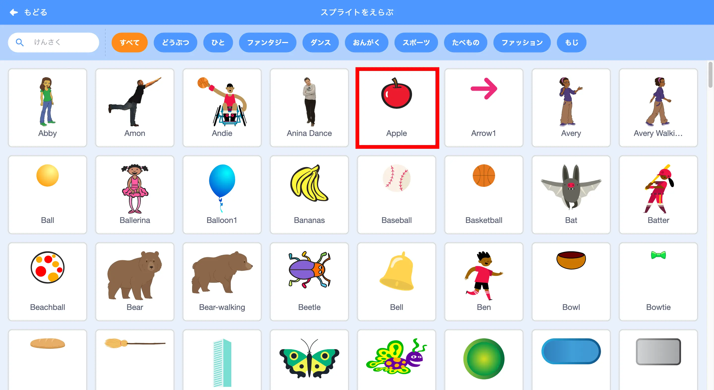

おちものゲームをつくろう！
もくじ
今回 つくるもの
ネコの動 きをつくろう！
まずは、はいけいを
“Blue Sky”を
はいけいが
①ネコを
②2つのブロックをこのように
つぎは、2つのブロックをこのように
ネコを
4つのブロックをこのように
もしならの
ふくせいしたら、”みぎむきやじるし”を”ひだりむきやじるし”に、
“90ど”を”-90ど”に
ネコが
おちものをつくろう！

おちものを

ここではAppleを
２つのブロックをこのように
そのときに、
つぎは、4つのブロックをこのように
Y
３つのブロックをこのように
“らんすう(ランダムな
あたったらゲームオーバーになるようにするよ！
4つのブロックを
これで
もっと
①りんごを
②
などに